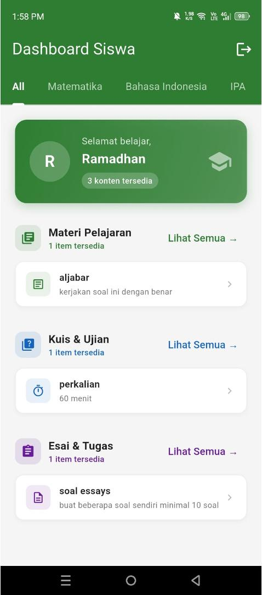
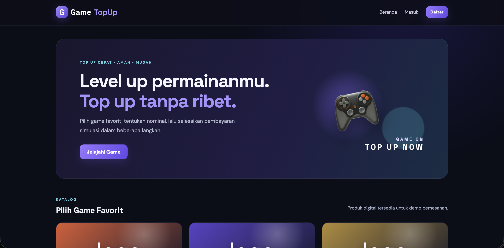
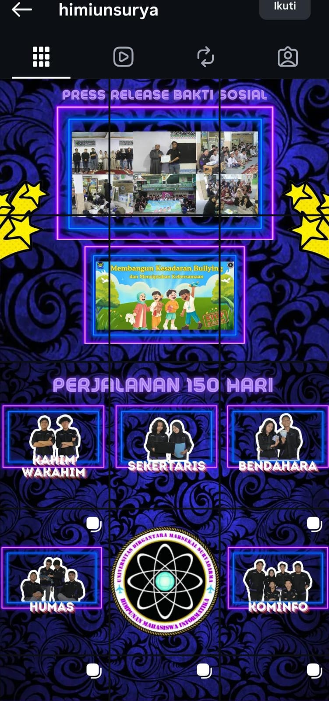

Web Development
Membangun antarmuka dan fitur website yang responsif serta fungsional.
Halo, saya
Saya membangun pengalaman digital melalui pengembangan website, integrasi API, dan desain antarmuka yang berorientasi pada kebutuhan pengguna.
01 — TENTANG SAYA
Saya memiliki ketertarikan pada web development, teknologi, dan pengalaman pengguna.
Saya merupakan fresh graduate dari Program Studi Sistem Informasi, Universitas Dirgantara Marsekal Suryadarma dengan IPK 3.48. Selama menempuh pendidikan di universitas, saya mempelajari pengembangan aplikasi dan website, pengelolaan database, serta perancangan antarmuka pengguna. Saya memiliki ketertarikan pada bidang Web Development, UI/UX Design, dan teknologi digital.
Saya memiliki pengalaman melalui program Magang dan Studi Independen Bersertifikat (MSIB) di PT Arkatama Multi Solusindo serta magang di Dinas Kesehatan Provinsi DKI Jakarta, Divisi Sistem Informasi. Pengalaman tersebut membantu saya mengembangkan kemampuan teknis, berpikir analitis, dan bekerja sama dalam tim. Saat ini, saya terbuka terhadap kesempatan untuk terus berkembang dan berkontribusi sebagai Web Developer.
Lihat pengalaman saya ↗02 — KEAHLIAN
Membangun antarmuka dan fitur website yang responsif serta fungsional.
Mengelola alur data, koneksi database, dan integrasi layanan.
Menyusun alur pengguna dan rancangan antarmuka aplikasi.
Membuat kebutuhan visual untuk media digital dan komunikasi.
03 — PENGALAMAN
Divisi Sistem Informasi
Mendapatkan pengalaman di lingkungan kerja sistem informasi instansi pemerintah, mengenal proses dan kebutuhan sistem digital serta mendukung aktivitas yang berkaitan dengan informasi dan teknologi.
Studi Independen — Pemrograman Web
Mengikuti pembelajaran dan praktik pengembangan web, termasuk PHP, database, Laravel, routing, controller, Blade, Eloquent ORM, middleware, autentikasi, serta pengenalan keamanan web, caching, dan debugging.
04 — PROYEK PILIHAN
Eksplorasi dari pengembangan aplikasi, website, hingga karya visual.

TUGAS AKHIR · FLUTTER
Rancangan aplikasi mobile sebagai media belajar interaktif untuk siswa SMA. Berfokus pada akses materi, latihan soal, penilaian otomatis, serta pengalaman belajar yang lebih terstruktur.

WEB APPLICATION
Proyek website top up game dengan fokus pada pengelolaan data dan fitur CRUD, serta pengembangan alur antarmuka untuk kebutuhan pengguna.

CREATIVE WORK
Kumpulan eksplorasi desain personal untuk mengembangkan komposisi, tipografi, pemilihan warna, dan penyampaian pesan visual.
Setiap gambar proyek menampilkan dokumentasi hasil pekerjaan yang pernah saya buat.
05 — KONTAK
Saya terbuka untuk diskusi, kolaborasi, dan kesempatan di bidang web development.
Kirim Email ↗